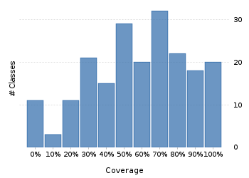
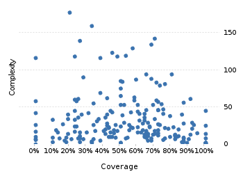

Project overview
Code coverage 228 classes, 11,378 / 21,538 elements
0.528275652.8%
Test results 324 / 457 tests 2.1 secs
0.7089715670.9%
Code metrics
4,882
12,842
3,814
228
157
7
68,718
27,801
6,977
0.54
3.37
16.73
32.57
1.83
Class Coverage Distribution

Class Complexity

Coverage tree map
Generating Coverage Tree Map. Please wait...

Top 20 project risks
DateTimeZoneBuilder
DateTimeZoneBuilder.PrecalculatedZone
DateTimeZoneBuilder.OfYear
ZoneInfoCompiler
PeriodFormatterBuilder.Separator
DateTimeZoneBuilder.RuleSet
PeriodFormatterBuilder.SimpleAffix
ZoneInfoCompiler.Rule
ZoneInfoCompiler.DateTimeOfYear
PeriodFormatterBuilder.Composite
DateTimeFormatterBuilder.MatchingParser
PeriodFormatterBuilder.FieldFormatter
DefaultNameProvider
ZoneInfoCompiler.Zone
FieldUtils
DateTimeParserBucket.SavedState
ImpreciseDateTimeField
DateTimeZoneBuilder.DSTZone
DateTimeFormatterBuilder.NumberFormatter
DateTimeZone
Most complex packages
| 1. | 0.424272442.4% |
org.joda.time 2458 |
| 2. | 0.4935613349.4% |
org.joda.time.format 1496 |
| 3. | 0.611576461.2% |
org.joda.time.chrono 1239 |
| 4. | 0.526315852.6% |
org.joda.time.field 667 |
| 5. | 0.8042922680.4% |
org.joda.time.tz 535 |
Most complex classes
| 1. | 0.2053742920.5% |
LocalDateTime 179 |
| 2. | 0.3388090433.9% |
LocalDate 161 |
| 3. | 0.704198570.4% |
DateTimeZone 144 |
| 4. | 0.2698412827% |
DateTime 141 |
| 5. | 0.68663668.7% |
PeriodFormatterBuilder.FieldFormatter 136 |